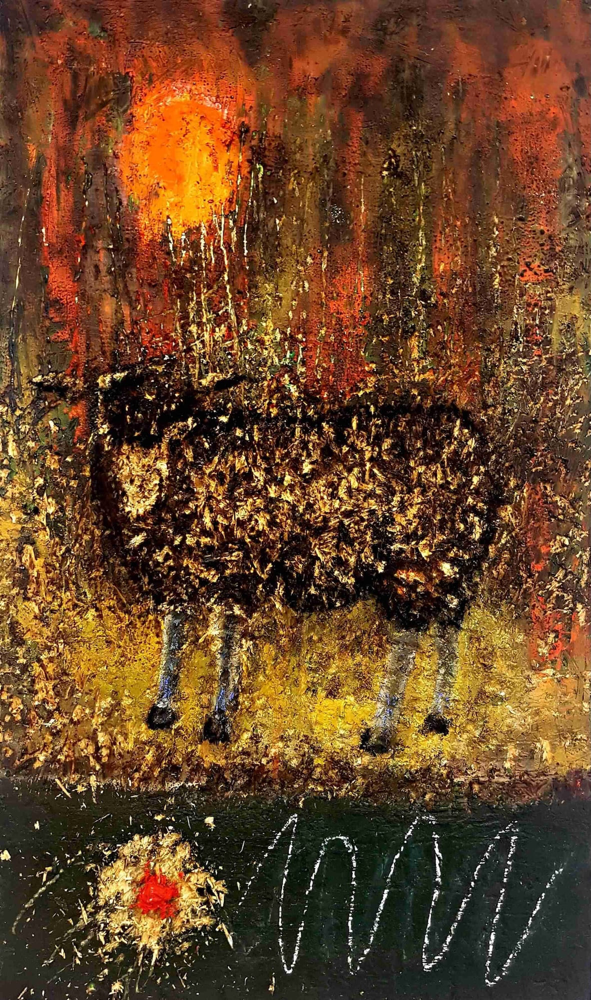

Möglicherweise steht mir das Gefühl im Weg, zu spät zu sein und doch noch alles vor mir liegen zu haben.
Bin ich zu alt, um mir noch Gehör zu verschaffen? Ist mein Zug abgefahren?
Ich war mutlos und habe mich für ein langweilig abgesichertes Leben entschieden.
Hätte ich anders leben können?
Dieser komische Lebensweg, den ich bisher ging… ist er krankhaft?
Was soll denn noch vor mir liegen?
Bin ich hochmütig?
Oder zu wenig?
Habe ich Zeit verschwendet?
Bin ich ein Spiesser?
Ich bin freundlich.
So bin ich.
